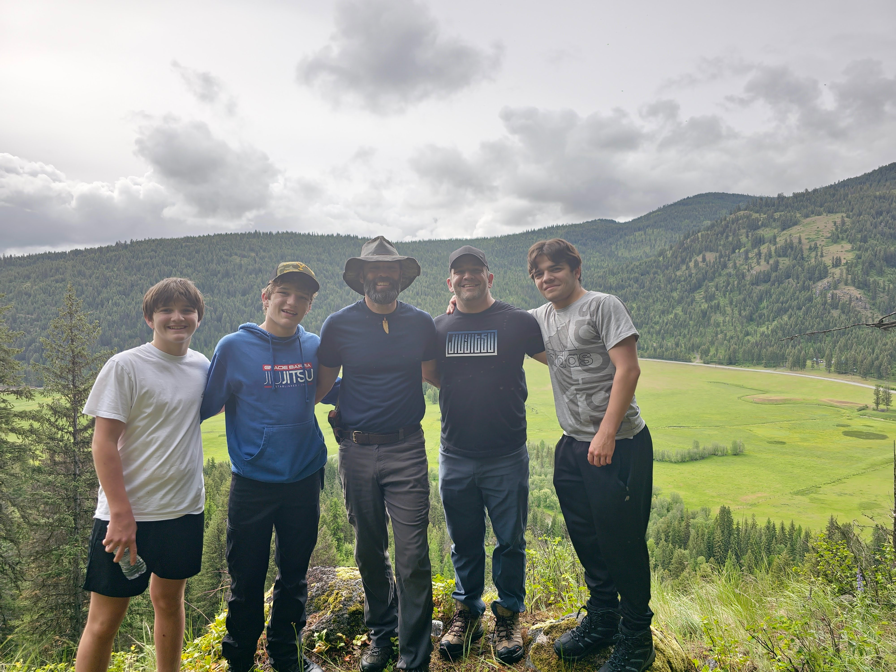

Three of us, one family, 28 acres on East Fork Cedar Creek — and a plan to turn it into the kind of place people leave better than they came.

On the property — the valley that started it all.
Cedar Creek Hunt & Adventure Basecamp started the way the best things do — a family looking at a wild, beautiful piece of country and asking, "what if?" What if a place existed where you could hunt the November rut at first light, fish Lake Roosevelt by afternoon, and end the day around a fire with the people who matter most? What if getting away didn't mean roughing it or losing the adventure?
That's what we're building on these 28 acres of creek-side timber: a basecamp for real adventure — guided hunts and fishing, cabins on the water, and the kind of unplugged days you'll be telling stories about for years. It's a getaway property with a backbone of the values on our crest — faith, integrity, and strength — and a simple promise: we don't rent beds, we sell the days you'll remember.
We're still early, and we're building it in the open. Every cabin, trail, and trip is being shaped right now — and we'd love for you to come along for the ride.
The one turning the idea into something you can actually book. Kai is building the basecamp's experience end to end — the property concepts, the trips, and this very site — so that every visit feels effortless from the first click to the last campfire.
The heart behind the dream. Mykle keeps the whole thing pointed at what matters — that people leave here with full hearts and good stories. If it makes the stay warmer, the welcome bigger, or the memory deeper, that's Mykle's department.
An attorney with Willingham Law Firm (WG Law), Taylor handles the foundation the rest is built on — the property, the due diligence, and making sure every step is done right and built to last. The basecamp stands on solid ground because Taylor made sure of it.